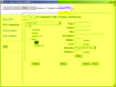

{kind=link}
{kind=link}

Version 1.1 is under development. Here are some screen shots of the work in progress:
|
 |
|
This 1.1 alpha release improves upon the previous 1.0 release as follows.
Application is database-centric
Previously, the HTML application treated each tool as its own isolated world, opening and closing the database each time a tool was used. izfree now has a database-centric model, where the current open database is shown at the top of the main window. An asterisk next to the database name indicates that changes have been made to the database but not yet saved.
New package tool is a modal dialog
In accordance with the new database-centric model of izfree, creating a new package is now packaged in a modal dialog. You either open an existing database, or create a new one. When you create a new database, that becomes the current database.
Improved dialog preview
izfree now lists the names of standard dialogs corresponding to the negative sequence numbers of the InstallUISequence table, the dialog named by the ErrorDialog property, as well as all authored dialogs listed in the InstallUISequence table.
For each dialog, any NewDialog control events that move to the next dialog in a sequence are displayed for the selected dialog. Selecting an event shows any condition and ordering information associated with the control event. Double-clicking an event selects the corresponding dialog invoked by the event, allowing a quick click-through of a dialog wizard sequence.
New table validation tool
The table validation tool shows all pertinent information for any column in any table in the open database. This is handy for learning more about the allowed values when editing columns in Orca.
Enhancements to New Component tool
The previous version supported creating new components from a directory tree in a blank database. No attempts were made to coordinate the new database table entries with existing database table entries.
The new components tool now coordinates more with the existing database table entries so that new components can be added to an existing installation database.
These are some of the ideas for things I will be adding to izfree over time. If you have something specific you'd like automated, feel free to add a feature request on the izfree SourceForge.net project page. I've entered specifics about these ideas there in the Feature Requests tracker and the Tasks tracker. If you are interested in helping with the development of izfree, join SourceForge and email me to be added to the project.
extract version information for EXE/DLL/OCX files
interface improvements
optionally include dialog boxes for the New Package tool
wildcard selective directory scanning for the New Components tool
Automatic COM registration extraction
"MSI Shrink" tool to create very small installs for small files
Merge modules
Support an MSI build process
GUI dialog editor (a work in progress is included with 1.0)